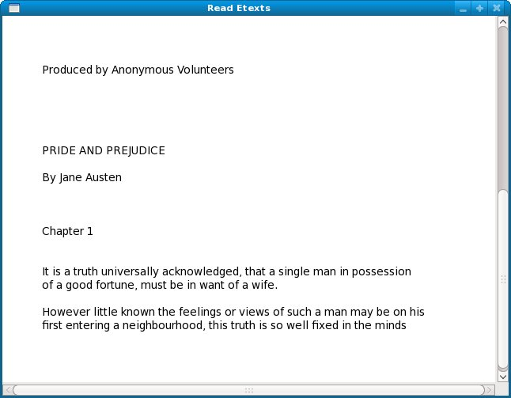

A Standalone Python Program For Reading Etexts
The Program
Our example program is based on the first Activity I wrote, Read Etexts. This is a program for reading free e-books.
The oldest and best source of free e-books is a website called Project Gutenberg (http://www.gutenberg.org/wiki/Main_Page). They create books in plain text format, in other words the kind of file you could make if you typed a book into Notepad and hit the Enter key at the end of each line. They have thousands of books that are out of copyright, including some of the best ever written. Before you read further go to that website and pick out a book that interests you. Check out the "Top 100" list to see the most popular books and authors.
The program we're going to create will read books in plain text format only.
There is a Git repository containing all the code examples in this book. Once you have Git installed you can copy the repository to your computer with this command:
git clone git://git.sugarlabs.org/myo-sugar-activities-examples/mainline.git
The code for our standalone Python program will be found in the directory Make_Standalone_Python in a file named ReadEtexts.py. It looks like this:
#! /usr/bin/env python
import sys
import os
import zipfile
import pygtk
import gtk
import getopt
import pango
page=0
PAGE_SIZE = 45
class ReadEtexts():
def keypress_cb(self, widget, event):
"Respond when the user presses one of the arrow keys"
keyname = gtk.gdk.keyval_name(event.keyval)
if keyname == 'plus':
self.font_increase()
return True
if keyname == 'minus':
self.font_decrease()
return True
if keyname == 'Page_Up' :
self.page_previous()
return True
if keyname == 'Page_Down':
self.page_next()
return True
if keyname == 'Up' or keyname == 'KP_Up' \
or keyname == 'KP_Left':
self.scroll_up()
return True
if keyname == 'Down' or keyname == 'KP_Down' \
or keyname == 'KP_Right':
self.scroll_down()
return True
return False
def page_previous(self):
global page
page=page-1
if page < 0: page=0
self.show_page(page)
v_adjustment = self.scrolled_window.get_vadjustment()
v_adjustment.value = v_adjustment.upper - v_adjustment.page_size
def page_next(self):
global page
page=page+1
if page >= len(self.page_index): page=0
self.show_page(page)
v_adjustment = self.scrolled_window.get_vadjustment()
v_adjustment.value = v_adjustment.lower
def font_decrease(self):
font_size = self.font_desc.get_size() / 1024
font_size = font_size - 1
if font_size < 1:
font_size = 1
self.font_desc.set_size(font_size * 1024)
self.textview.modify_font(self.font_desc)
def font_increase(self):
font_size = self.font_desc.get_size() / 1024
font_size = font_size + 1
self.font_desc.set_size(font_size * 1024)
self.textview.modify_font(self.font_desc)
def scroll_down(self):
v_adjustment = self.scrolled_window.get_vadjustment()
if v_adjustment.value == v_adjustment.upper - \
v_adjustment.page_size:
self.page_next()
return
if v_adjustment.value < v_adjustment.upper - v_adjustment.page_size:
new_value = v_adjustment.value + v_adjustment.step_increment
if new_value > v_adjustment.upper - v_adjustment.page_size:
new_value = v_adjustment.upper - v_adjustment.page_size
v_adjustment.value = new_value
def scroll_up(self):
v_adjustment = self.scrolled_window.get_vadjustment()
if v_adjustment.value == v_adjustment.lower:
self.page_previous()
return
if v_adjustment.value > v_adjustment.lower:
new_value = v_adjustment.value - \
v_adjustment.step_increment
if new_value < v_adjustment.lower:
new_value = v_adjustment.lower
v_adjustment.value = new_value
def show_page(self, page_number):
global PAGE_SIZE, current_word
position = self.page_index[page_number]
self.etext_file.seek(position)
linecount = 0
label_text = '\n\n\n'
textbuffer = self.textview.get_buffer()
while linecount < PAGE_SIZE:
line = self.etext_file.readline()
label_text = label_text + unicode(line, 'iso-8859-1')
linecount = linecount + 1
label_text = label_text + '\n\n\n'
textbuffer.set_text(label_text)
self.textview.set_buffer(textbuffer)
def save_extracted_file(self, zipfile, filename):
"Extract the file to a temp directory for viewing"
filebytes = zipfile.read(filename)
f = open("/tmp/" + filename, 'w')
try:
f.write(filebytes)
finally:
f.close
def read_file(self, filename):
"Read the Etext file"
global PAGE_SIZE
if zipfile.is_zipfile(filename):
self.zf = zipfile.ZipFile(filename, 'r')
self.book_files = self.zf.namelist()
self.save_extracted_file(self.zf, self.book_files[0])
currentFileName = "/tmp/" + self.book_files[0]
else:
currentFileName = filename
self.etext_file = open(currentFileName,"r")
self.page_index = [ 0 ]
linecount = 0
while self.etext_file:
line = self.etext_file.readline()
if not line:
break
linecount = linecount + 1
if linecount >= PAGE_SIZE:
position = self.etext_file.tell()
self.page_index.append(position)
linecount = 0
if filename.endswith(".zip"):
os.remove(currentFileName)
def destroy_cb(self, widget, data=None):
gtk.main_quit()
def main(self, file_path):
self.window = gtk.Window(gtk.WINDOW_TOPLEVEL)
self.window.connect("destroy", self.destroy_cb)
self.window.set_title("Read Etexts")
self.window.set_size_request(640, 480)
self.window.set_border_width(0)
self.read_file(file_path)
self.scrolled_window = gtk.ScrolledWindow(hadjustment=None, \
vadjustment=None)
self.textview = gtk.TextView()
self.textview.set_editable(False)
self.textview.set_left_margin(50)
self.textview.set_cursor_visible(False)
self.textview.connect("key_press_event", self.keypress_cb)
buffer = self.textview.get_buffer()
self.font_desc = pango.FontDescription("sans 12")
font_size = self.font_desc.get_size()
self.textview.modify_font(self.font_desc)
self.show_page(0)
self.scrolled_window.add(self.textview)
self.window.add(self.scrolled_window)
self.textview.show()
self.scrolled_window.show()
v_adjustment = self.scrolled_window.get_vadjustment()
self.window.show()
gtk.main()
if __name__ == "__main__":
try:
opts, args = getopt.getopt(sys.argv[1:], "")
ReadEtexts().main(args[0])
except getopt.error, msg:
print msg
print "This program has no options"
sys.exit(2)
Running The Program
To run the program you should first make it executable. You only need to do this once:
chmod 755 ReadEtexts.py
For this example I downloaded the file for Pride and Prejudice. The program will work with either of the Plain text formats, which are either uncompressed text or a Zip file. The zip file is named 1342.zip, and we can read the book by running this from a terminal:
./ReadEtexts.py 1342.zip
This is what the program looks like in action:

You can use the Page Up, Page Down, Up, Down, Left, and Right keys to navigate through the book and the '+' and '-' keys to adjust the font size.
How The Program Works
This program reads through the text file containing the book and divides it into pages of 45 lines each. We need to do this because the gtk.TextView component we use for viewing the text would need a lot of memory to scroll through the whole book and that would hurt performance. A second reason is that we want to make reading the e-book as much as possible like reading a regular book, and regular books have pages. If a teacher assigns reading from a book she might say "read pages 35-50 for tommorow". Finally, we want this program to remember what page you stopped reading on and bring you back to that page again when you read the book next time. (The program we have so far doesn't do that yet).
To page through the book we use random access to read the file. To understand what random access means to a file, consider a VHS tape and a DVD. To get to a certain scene in a VHS tape you need to go through all the scenes that came before it, in order. Even though you do it at high speed you still have to look at all of them to find the place you want to start watching. This is sequential access. On the other hand a DVD has chapter stops and possibly a chapter menu. Using a chapter menu you can look at any scene in the movie right away, and you can skip around as you like. This is random access, and the chapter menu is like an index. Of course you can access the material in a DVD sequentially too.
We need random access to skip to whatever page we like, and we need an index so that we know where each page begins. We make the index by reading the entire file one line at a time. Every 45 lines we make a note of how many characters into the file we've gotten and store this information in a Python list. Then we go back to the beginning of the file and display the first page. When the program user goes to the next or previous page we figure out what the new page number will be and look in the list entry for that page. This tells us that page starts 4,200 characters into the file. We use seek() on the file to go to that character and then we read 45 lines starting at that point and load them into the TextView.
When you run this program notice how fast it is. Python programs take longer to run a line of code than a compiled language would, but in this program it doesn't matter because the heavy lifting in the program is done by the TextView, which was created in a compiled language. The Python parts don't do that much so the program doesn't spend much time running them.
Sugar uses Python a lot, not just for Activities but for the Sugar environment itself. You may read somewhere that using so much Python is "a disaster" for performance. Don't believe it.
There are no slow programming languages, only slow programmers.
Author : StandalonePythonReadEtexts
© James Simmons 2009, 2010
Modifications:
Lachlan Musicman 2010
License : General Public License
Produced in FLOSS Manuals (http://www.flossmanuals.net)